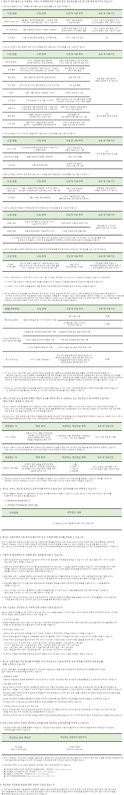

창호를 고르는 현명한 방법!
견적부터 시공, 사후 서비스까지 한번에 해결하세요!
집의 가치를 바꾸다.
Save The Energy, Save The Health.
창호를 고르는 현명한 방법!
견적부터 시공, 사후 서비스까지 한번에 해결하세요!
집의 가치를 바꾸다.
Save The Energy, Save The Health.

| 제공받는 자 | 제공 목적 | 제공하는 개인정보 항목 | |
|---|---|---|---|
| 인테리어 업체 (윈도우 케어 플러스 회원 가입자) | 상담 및 AS신청을 위한 정보 확인 등 정보통신 서비스 제공 계약의 이행을 위해 필요한 업무의 처리 | 이름, 연락처, 해당지역, 상담내용 | 서비스 이용 및 상담 종료 시점 까지 (단, 관계 법령이 정한 시점까지 보존) |